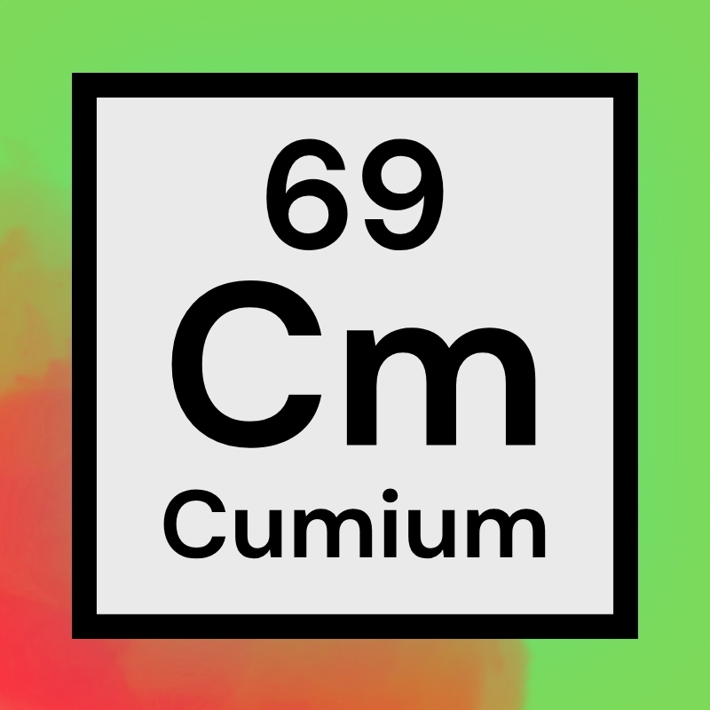

Liquidity disappeared.
Charts were flat. Conviction was low. Every candle felt personally insulting.
A synthetic meme compound first detected when charts went flat, liquidity vanished, and the timeline had nothing left to do but mutate.

During an extended crypto market crash, researchers observed a strange new reaction among traders with too much screen time and nowhere to deploy it.
Charts were flat. Conviction was low. Every candle felt personally insulting.
Some stopped trading. Others became slackers. A critical few started posting nonsense.
Researchers named the reaction Cumium: highly reactive, questionably stable, and extremely viral.
The Institute is tracking Cumium across the open internet. Current conditions remain unsuitable for productivity.
Cumium appears most frequently where attention is abundant, the market is collapsing, and no one has touched grass recently.
Cumium molecules bond rapidly between bored traders. Once enough particles connect, the compound spreads through social platforms at terminal velocity.